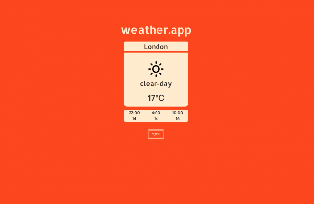

2018
Kanye Sentiment Analysis Twitter Bot
I used Node, the Twitter API and IBM Wason Tone Analyzer API to analyse Kanye's tweets.
Node Cloud
QMBES Website
The Queen Mary Business and Enterprise Society website.
MySQL PHP
Stock Trading Simulator
An object-orientated desktop stock trading simulator in Java + JavaFX.
Java Desktop2017
StarTAC Calculator
A Javascript calculator with a lot of CSS.
Javascript CSSWeather App
A Javascript Weather App.
Javascript CSS

Wiki Viewer
A Javascript Wiki Search Interface.
Javascript CSSRandom Quote Generator
A Javascript Random Quote Generator.
Javascript CSS